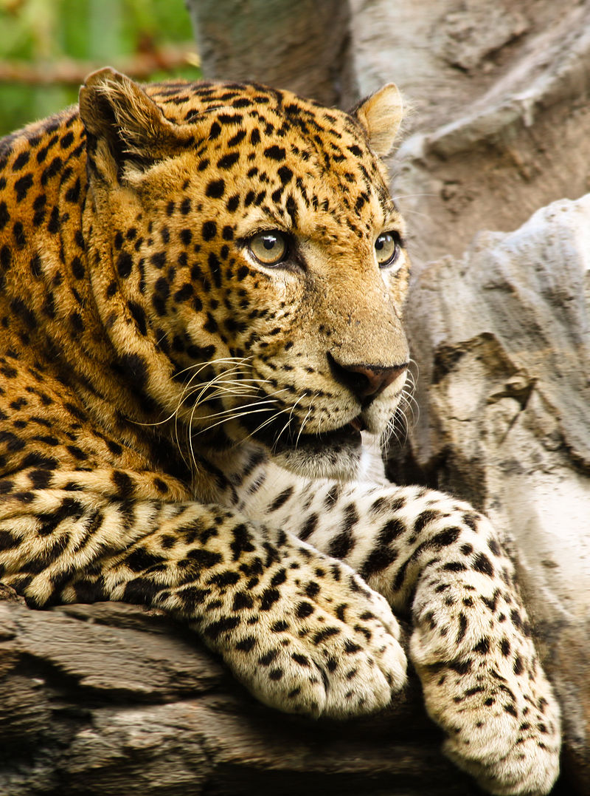

El recetas kitchen de Mehdi
SOBRE MI
Hola, bienvenid@ a mi blog, un espacio donde quiero compartir mis recetas vegetarianas y veganas favoritas

Sobre Mi
Los tiburones son seres mitológicos e inquietantes, peces extraordinarios de nadar sigiloso y muy antiguos.
-
El tiburón zorro pelágico
tiene una impresionante cola en forma de látigo. Estos tiburones alcanzan casi los 6 metros de longitud y su cola suele tener la longitud de todo el cuerpo, o más.
-
tiburones martillo
Uno de los tiburones más emblemáticos de nuestro planeta azul, obtienen su nombre de su inusual cabeza en forma de martillo.
Pasta con salsa de coliflor y pimienta de Jamaica
Resum
Una salsa vegana para la pasta, tan sabrosa y cremosa que resulta irresistible! Está elaborada con coliflor y con otros ingredientes vegetales, que la convierten en un plato muy nutritivo y saludable

Animales
-
Gran tiburón blanco
Su gran tamaño (puede llegar a los 6 metros) y sus 300 dientes le permiten cazar animales bastante grandes (como focas o delfines). -
Tiburón globo
Se hincha cuando está en peligro hasta duplicar su tamaño y parecen mucho más grandes de lo que realmente son -
LINCE IBÉRICO
es una especie de mamífero carnívoro de la familia Felidae, endémico de la península ibérica, -
TIGRE
De las nueve subespecies que existían, en la actualidad quedan solamente seis, ya que tres de ellas se extinguieron . -
LEÓN
Icono de África, es además el símbolo de la vida salvaje y el único felino que vive en grandes manadas -
RAYAS
Las rayas forman el grupo de peces cartilaginosos más amenazado de extinción: 4 de cada 10 especies están amenazadas
Gracias por la atencion
leopardo
Al igual que tres de los demás félidos del género Panthera: el león, el tigre y el jaguar, están caracterizados por una modificación en el hueso hioides que les permite rugir.
